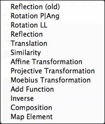

Transformation Modes
Transformations are one of the most powerful new geometric enhancements in
Cinderella.2. With transformations it is easy to transfer parts of a construction to another place, reflect or rotate them, or even apply a perspective transformation. The use of transformations often allows significant simplifications of constructions even in unexpected circumstances.
Transformations are conceptually slightly different from usual geometric construction modes in
Cinderella. While a usual geometric construction generates a visible geometric object (such as a parallel or an intersection point), a transformation creates an action button that permits the application of the transformation to other objects.
The transformation mode menu collects all possible types of transformation operations:
 |
| Transformation mode menu |
However, before we explain the different kinds of transformations, we will demonstrate the general use of transformations by means of a few simple examples.
The different transformation modes are described in the following sections: